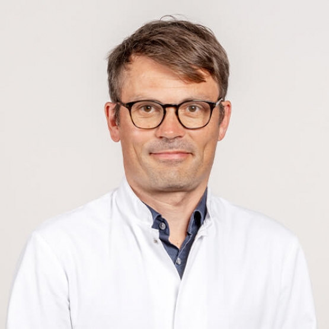
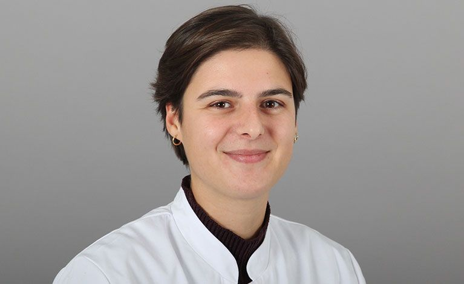
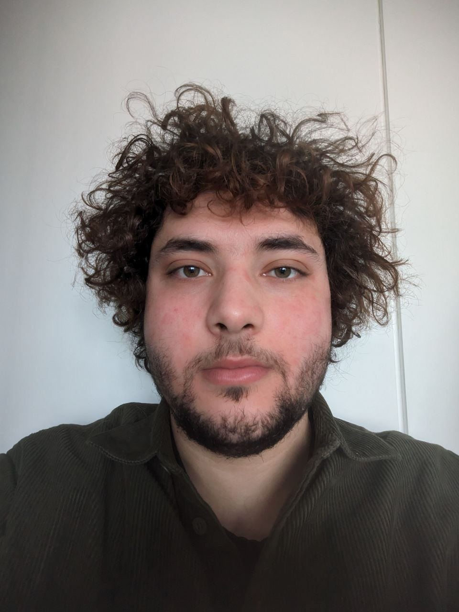
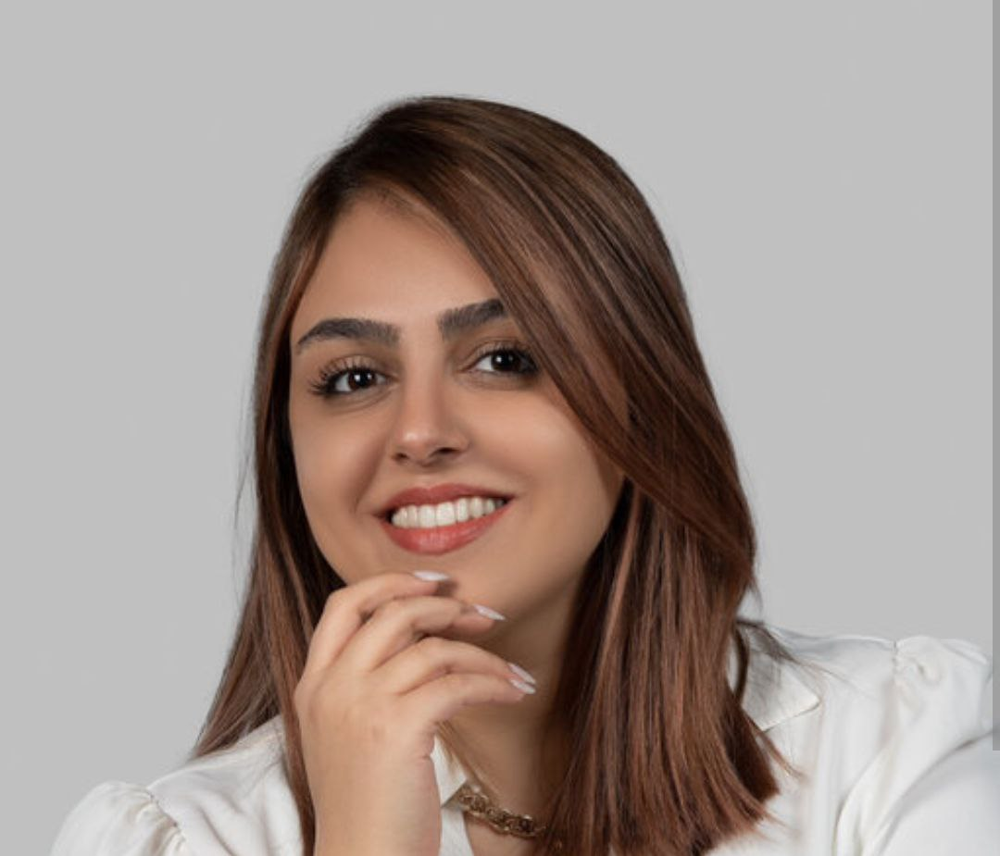

About Us
We are a radiology group based in Klinikum rechts der Isar in Munich, known as AG Braren. Our team is dedicated to providing high-quality imaging services and innovative radiological solutions for patients and healthcare professionals. We aim to support accurate diagnoses and effective treatment plans through state-of-the-art technology and expertise.
Our Goals
We use preclinical mouse models to try to detect pancreatic cancer at an early stage. Our goal is also to stratify pancreatic cancer based on PET imaging, employing advanced techniques like hyperpolarized pyruvate to visualize the Warburg effect, along with T1map, T2map, DWI, and DCE sequences. By leveraging these tools, we aim to enhance early detection and precise classification of pancreatic cancer for better treatment outcomes.
Our Team
The AG Braren team is composed of experienced radiologists and medical professionals led by experts in the field of radiology. Our team includes:
-

Prof. Dr. Rickmer F. Braren - Group Leader
Prof. Dr. Braren is an expert in radiology with significant contributions to research in early cancer detection and advanced imaging techniques. -

Dr. Marlene Spitzel - Postdoctoral Researcher
Dr. Spitzel focuses on imaging-based cancer research and is dedicated to improving diagnostic accuracy through cutting-edge technologies. -

Hussein Trabulssi - PhD Student
Hussein is working with Mariia on characterizing the role of Kras dosage in mouse models -

Romina Karampour - PhD Student
Romina is working on characterizing the metabolic changes of human PDAC cell lines as well as PDO after treatment with FFX & GA -
 Mariia Semina - Medical Doctoral Candidate
Mariia Semina - Medical Doctoral Candidate
Mariia is involved in imaging research focusing on T1 and T2 mapping to enhance the early detection of pancreatic tumors. -
 Hannah Pfeufer - Medical Doctoral Candidate
Hannah Pfeufer - Medical Doctoral Candidate
Hannah is researching diffusion-weighted imaging (DWI) for assessing tumor heterogeneity in pancreatic cancer. -
 James Liu - Medical Doctoral Candidate
James Liu - Medical Doctoral Candidate
James is focused on the use of dynamic contrast-enhanced (DCE) imaging sequences to improve the visualization of pancreatic cancer progression.
Our Leader
Prof. Dr. Rickmer F. Braren leads the AG Braren radiology group at Klinikum rechts der Isar. Prof. Dr. Braren is a highly respected expert in the field of radiology with significant contributions to both clinical practice and research. He is also involved in various projects focusing on improving radiological diagnostics and patient care.
For more information about Prof. Dr. Rickmer F. Braren, please visit his profile: Prof. Dr. Rickmer F. Braren.
Contact Us
If you would like to learn more about our services or schedule an appointment, please contact us:
Email: agbraren@klinikum-rechts-der-isar.de
Phone: +49 89 4140-0
We look forward to hearing from you!